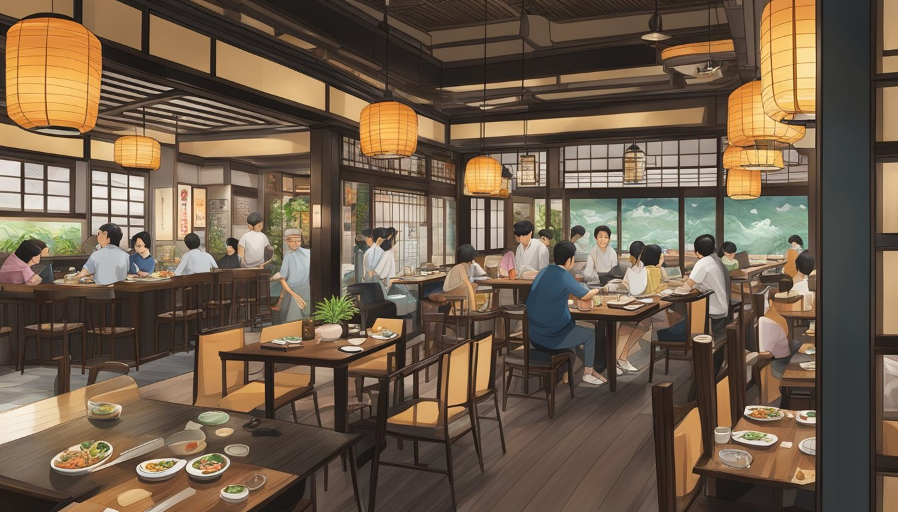

PLATOS POPULARES
Onigiri
El onigiri es un platillo japonés tradicional que consiste en bolas o triángulos de arroz compacto, generalmente sazonado con sal y envuelto en una hoja de alga nori.
LEER MÁS
Yakiniku
El yakiniku es un estilo de comida japonesa que consiste en asar diversos tipos de carnes, mariscos y vegetales sobre una parrilla, ya sea en restaurantes especializados o en casa.
LEER MÁS
Sushi
El sushi es un plato tradicional japonés que combina arroz sazonado con vinagre (shari) con diversos ingredientes, como pescados, mariscos, vegetales y, ocasionalmente, frutas (neta).
LEER MÁS
Valores
En nuestro restaurante japonés, valoramos la autenticidad en cada plato. Utilizamos ingredientes frescos y de alta calidad para preparar platos tradicionales japoneses, asegurándonos de mantener la esencia de la cocina japonesa en cada bocado. La dedicación a la precisión en la presentación y el sabor es fundamental para ofrecer una experiencia auténtica y memorable.
MISIÓN
Ofrecer un servicio amistoso y agradable para nuestros comensales de todas las edades y preferencias.
VISIÓN
Ser el restaurante de comida japonesa líder en la región, reconocido por ofrecer una experiencia auténtica e innovadora que combina la tradición culinaria japonesa con un toque contemporáneo, deleitando a nuestros clientes con ingredientes de la más alta calidad, un servicio excepcional y un ambiente que celebra la cultura japonesa en cada detalle.
